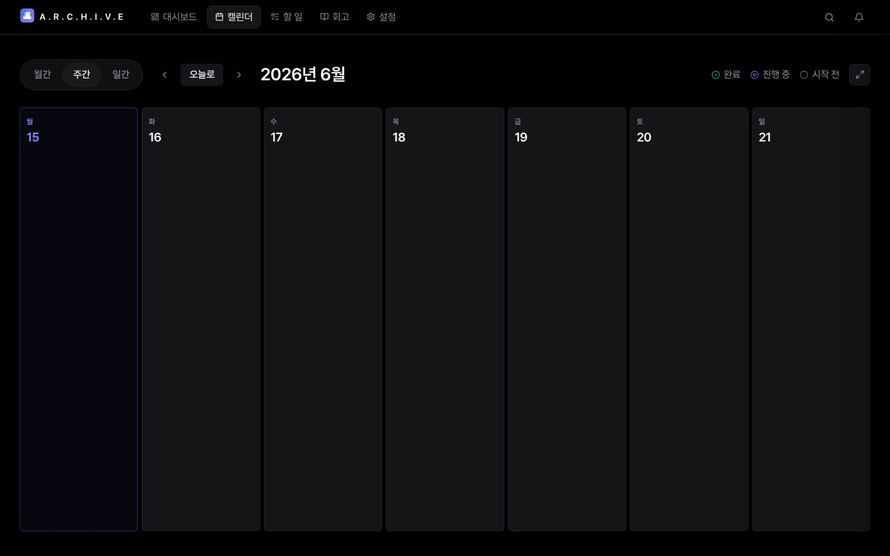
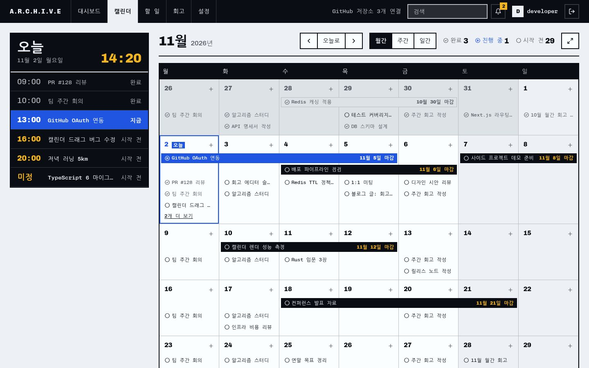
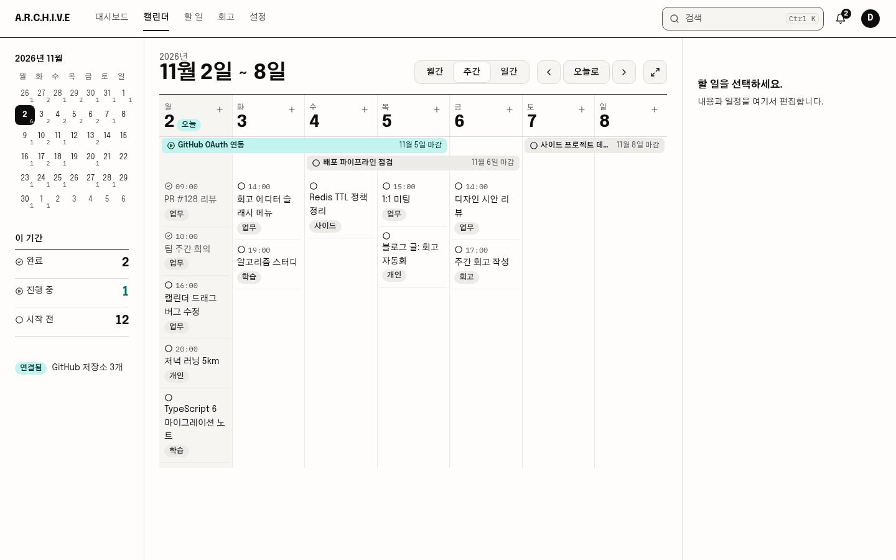
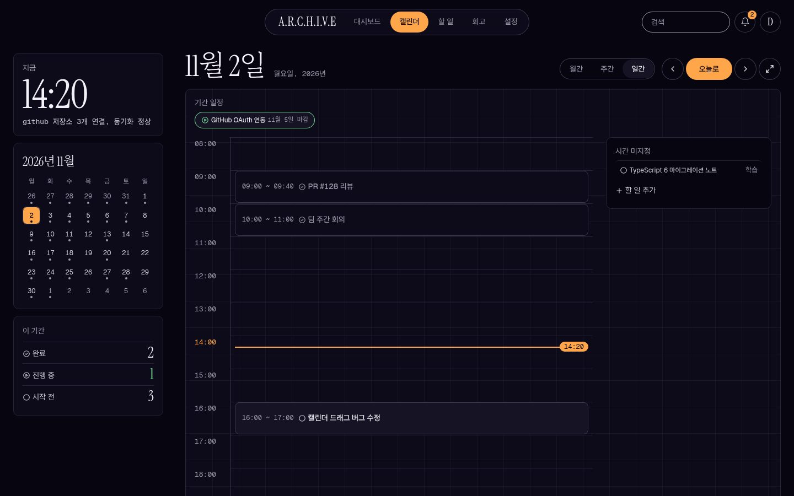
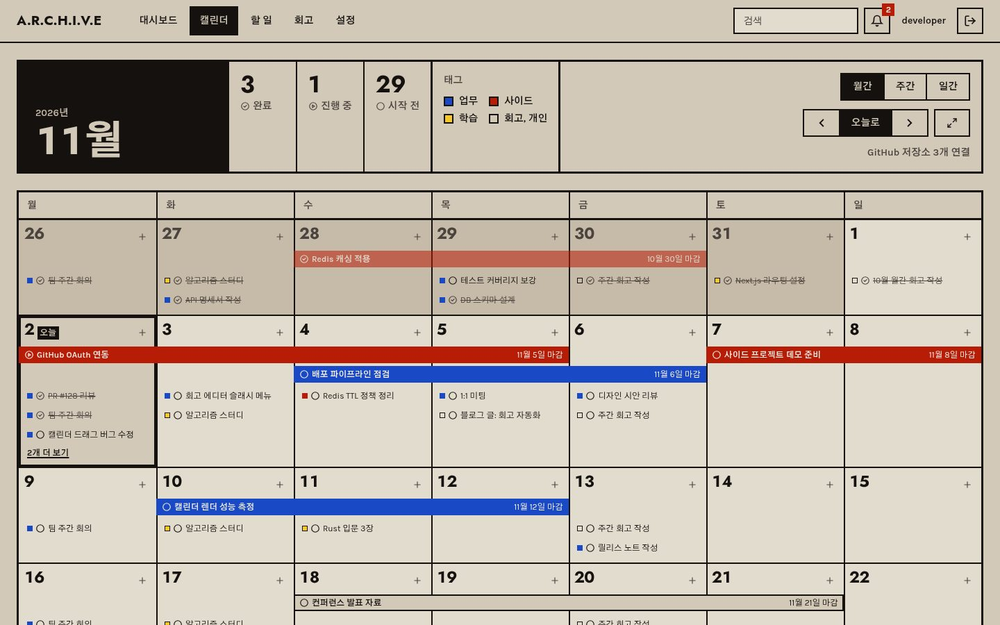
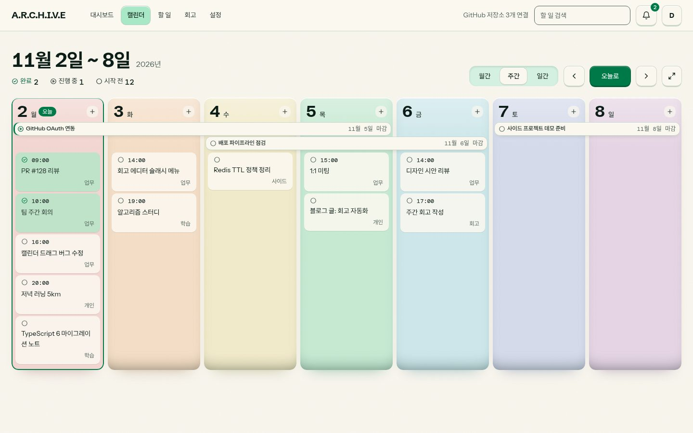

현재 화면
Linear 계열 다크, 라벤더 포인트. 데모 모드라 데이터가 비어 있습니다.
Hallmark 테마 카탈로그에서 서로 다른 방향 다섯 개를 골라, 같은 데이터와 같은 동작(shared/archive-proto.js) 위에 디자인만 다르게 얹었습니다. 표본 데이터는 2026년 11월 2일 14:20 기준입니다. 각 시안에서 보기, 상세 패널, 로딩·빈·오류 상태를 바로 열 수 있습니다.

Linear 계열 다크, 라벤더 포인트. 데모 모드라 데이터가 비어 있습니다.




